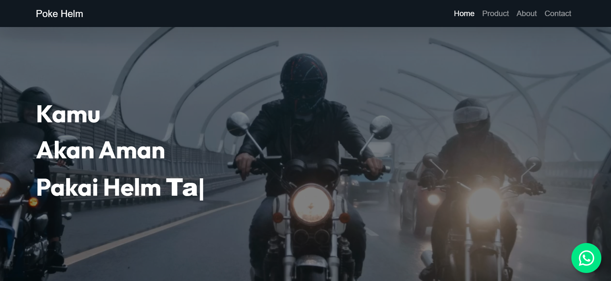
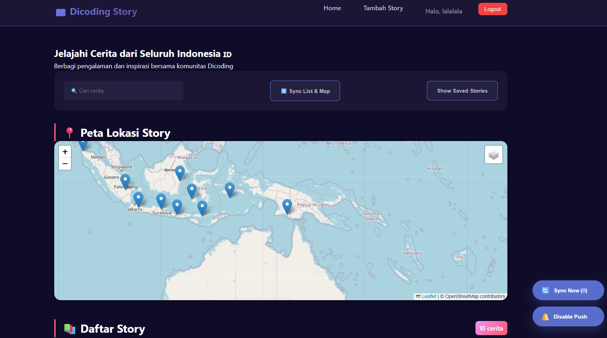
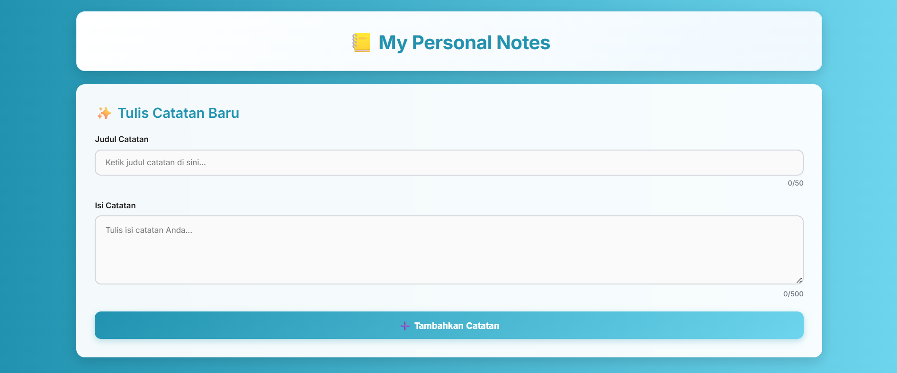
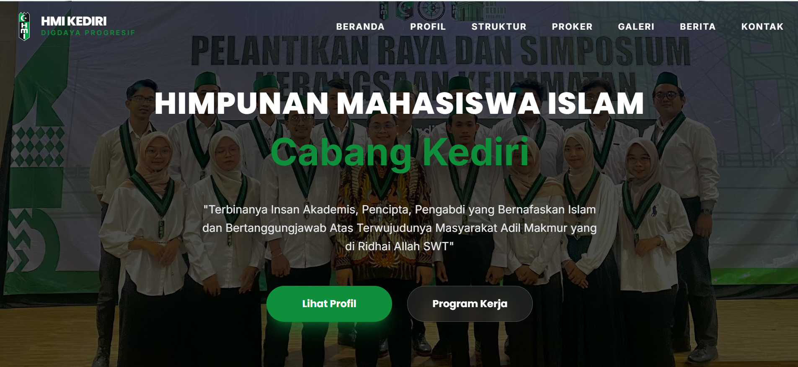
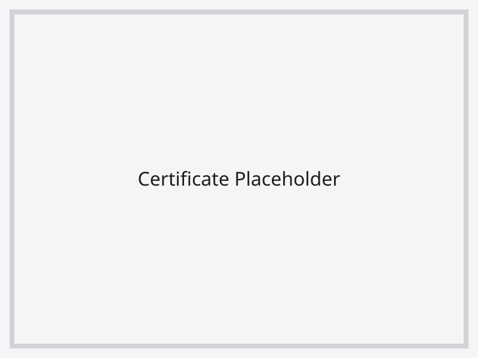

Poke Helm Store
An online helmet store interface where users can browse helmet models, view items in detail, and check prices directly. Features a modern and clean product display layout.
- HTML
- CSS
- JavaScript
I am an Information Systems student passionate about web development. I focus on building responsive websites and continuously improving my skills in modern frontend technologies.
I started learning programming during my Information Systems studies, where I discovered my interest in building websites and digital interfaces. Since then, I have been continuously improving my skills in frontend development by creating personal projects and experimenting with modern web technologies.
I enjoy turning ideas into clean, functional, and visually appealing web experiences. Currently I focus on building responsive websites and improving my skills.

An online helmet store interface where users can browse helmet models, view items in detail, and check prices directly. Features a modern and clean product display layout.

A story sharing application synchronized with precise location data. Users can upload photos and stories with their current location. Built as a final project for Dicoding's Intermediate class.

A comprehensive notes application featuring PWA support, intuitive user interface, and secure data handling. Optimized for performance with advanced offline caching strategies.

A modern and elegant profile website for Himpunan Mahasiswa Islam (HMI) Cabang Kediri. Features advanced layout components, Google Maps integration, and premium GSAP/AOS animations for a professional organizational presence.
Building responsive, pixel-perfect user interfaces carefully crafted for excellent user experience.
Experience in general-purpose programming, logic building, and server-side development concepts.
Accelerating development cycles and maintaining robust configurations using modern toolsets.
Bridging the gap between design and development by utilizing standard industry tools.

Online Course
Online Course
Online Course
Feel free to reach out if you would like to collaborate, discuss a project, or simply connect. I am always open to new opportunities and learning experiences.
Say Hello